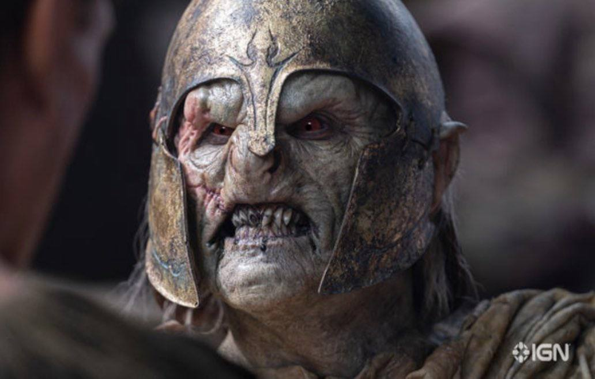
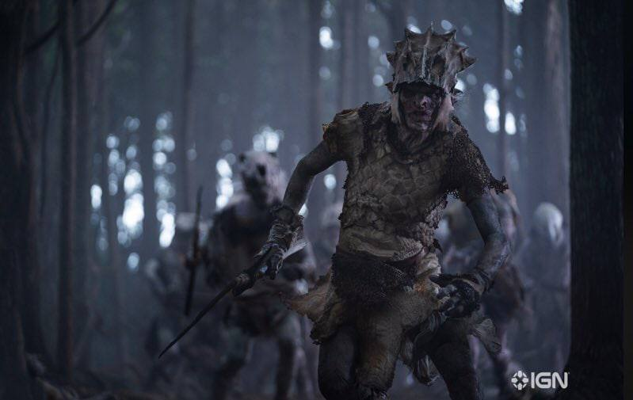

Первая новость
Трейлер второй половины четвертого сезона сериала «Очень странные дела». Вторая половина состоит всего из двух серий, но Netflix решил использовать по максимуму один из своих основных сериалов. Покажут уже 1 июля.
Вторая новость
Подвезли новые кадры из сериала «Властелин колец: Кольца власти». На этот раз авторы предлагают нам посмотреть, как у них будут выглядеть орки. Премьера сериала на Amazon в начале сентября.

